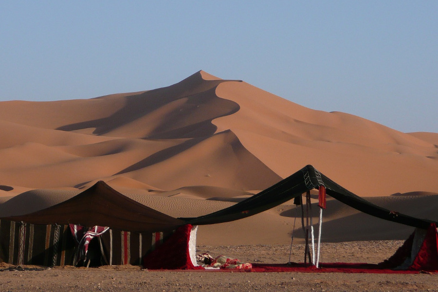

Dessert https://www.platinum-heritage.com/blog/camel-safari-dubai/
Prophet Muhammad, also known as Muhammad ibn Abd Allah, was the founder of Islam and is regarded as the last prophet of Islam. He was born in Mecca in 570 CE (approximately), in what is now Saudi Arabia. His life and teachings have had a profound impact on the world, shaping the religion of Islam and its followers.
Prophet Muhammad is believed to have received revelations from God (Allah) through the angel Gabriel. These revelations, collected in the Quran, are the central religious text of Islam. The Quran provides guidance on matters of faith, morality, and law for Muslims.
One of the central messages of Prophet Muhammad was the affirmation of monotheism (the belief in one God) in a society where multiple deities were worshipped. He called people to worship Allah alone and reject the worship of idols.
Through his teachings, Prophet Muhammad established the foundation for the Muslim community (ummah). His leadership in Medina brought together diverse tribal and religious groups under the banner of Islam.
Prophet Muhammad's teachings and actions provided a model for personal ethics, morality, and social justice. His Hadiths (sayings and actions) serve as a source of guidance for Muslims in matters of daily life.

Village https://muslimvillage.com/2018/09/07/58741/faith-destiny-trust/
In 622 CE, due to growing opposition in Mecca, Prophet Muhammad and his followers migrated to Medina. This event, known as the Hijra, marks the beginning of the Islamic lunar calendar and the establishment of the first Muslim community.
In 630 CE, Prophet Muhammad and his followers returned to Mecca and peacefully reclaimed the city, where they removed the idols from the Kaaba and established Islam as the dominant faith in the Arabian Peninsula.
Prophet Muhammad passed away in 632 CE in Medina. His legacy lives on through the Quran, Hadiths, and the Islamic faith. His teachings have had a profound and enduring influence on the lives and beliefs of billions of Muslims around the world.
The Isra and Mi'raj, also known as the Night Journey and Ascension, is one of the miraculous events in the life of Prophet Muhammad. According to Islamic tradition, one night, the Angel Gabriel transported Prophet Muhammad from the Kaaba in Mecca to the Al-Aqsa Mosque in Jerusalem. From there, he ascended through the heavens, meeting various prophets and ultimately approaching the presence of Allah (God). During this journey, he received specific instructions about the daily prayers (Salat), which are central to Islamic worship. The Isra and Mi'raj are celebrated by Muslims as a testament to the extraordinary nature of the prophethood of Muhammad and the significance of prayer in Islam. It also serves as a reminder of the deep spiritual connection between the earthly and heavenly realms in the Islamic tradition.
The life and teachings of Prophet Muhammad are primarily documented in Islamic tradition through the Quran and Hadiths. For more detailed information, you can refer to Islamic historical texts, biographies of the Prophet, and scholarly works on Islam. Additionally, you can find information about Prophet Muhammad on various Islamic websites and reputable historical sources.
Prophet Muhammad was born in the year 570 CE in the city of Mecca, in what is now Saudi Arabia. He belonged to the prominent Quraishi tribe, specifically the Hashim clan. His father, Abdullah, passed away before his birth, and his mother, Amina, passed away when he was six years old. He was raised by his grandfather and later by his uncle, Abu Talib. Muhammad was known for his honesty and integrity, earning him the nickname "Al-Amin" (the trustworthy).
At the age of 40, Muhammad received his first revelation from Allah (God) through the Angel Gabriel while he was meditating in the Cave of Hira. This marked the beginning of his prophethood. Over a period of 23 years, he received a series of revelations that were compiled into the Quran, the holy book of Islam.
Prophet Muhammad's central message was the belief in the oneness of God (Tawhid) and the rejection of polytheism and idol worship. He also emphasized the importance of social justice, compassion, and ethical conduct. He faced significant opposition and persecution from the leaders of Mecca due to his message, as it challenged the existing order and the polytheistic practices of the Quraysh.
Quran https://www.rct.uk/collection/1005000/al-quran-lqran-the-quran
Prophet Muhammad (ﷺ) https://en.wikipedia.org/wiki/Muhammad